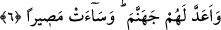

“Onların günahlarını örtmesi içindir.” “Onların günahlarını örtmek için” ifâdesi
tıpkı mağfiret etmek anlamındadır. Yâni, onların günahını siler, cennete girmezden önce
bile açığa vurmaz ki, sanki hiç günaha bulaşmadan cennete giriyorlarmış gibi muamele
görürler. Fakat burada dikkati çeken bir husus var: Allah Teâlâ önce onları cennete
sokacağından, arkasından da günahlarını sileceğinden bahsetmektedir. Halbuki
normalde, önce günahlar silinir, daha sonra cennete girilir. Çünkü önce temizlenir, daha
sonra süslenir. Fakat burada yüce mükâfâtın bir an önce bildirilmesi söz konusudur.
Gerçekten cennete sokulmak ve günahların silinmesi, Allah katında, kadir ve kıymeti
takdir edilemeyecek derecede büyük bir kurtuluştur. Çünkü bu kurtuluş, insanların
iyilikleri elde etme ve zarardan arınma isteklerinin ulaşabildiği en son noktayı, zirveyi
teşkil eder.
6. (Bir de bunlar) Allah hakkında kötü zanda bulunan münâfık erkeklere ve
münâfık kadınlara, Allah’a ortak koşan erkeklere ve ortak koşan kadınlara azap
etmesi içindir. Müslümanlar için bekledikleri kötülük çemberi başlarına gelsin!
Allah onlara gadap etmiş, lânetlemiş ve cehennemi kendilerine hazırlamıştır. Orası
ne kötü bir yerdir!
“(Bir de bunlar) Allah hakkında kötü zanda bulunan münâfık erkeklere ve münâfık
kadınlara, Allah’a ortak koşan erkeklere ve ortak koşan kadınlara azap etmesi
içindir.” Medineli erkek ve kadın münâfıklarla, Mekkeli erkek ve kadın müşriklere
azab çektirmek içindir. Mü’minlerin cennete girmelerini, günahlarının silinmesini
sağlayan olaylar, münâfıkların ve müşriklerin azaba düçâr olmalarına zemin
hazırlıyordu. Mü’minlerin kazandığı zafer karşısında onların kinle dolup taşması ve
gergin bir halde bulunmaları onlar için bir azaptır.
Münâfıkların, müşriklerden daha önce söz konusu edilmeleri, hiç şüphesiz onların
azaba çok daha fazla müstehak olmalarındandır. Nitekim onlardan bir çoğu Rasûlullah
(s.a.) ile beraber çıkmayıp Medine’de kalmışlar, sonra da dillerinin ucuyla, kalplerinde
gizledikleriyle hiç uyuşmayacak şekilde özür dilemeye kalkışmışlardır. İnsanları
kandırsalar bile, Allah’ı da kandıracak değillerdi. Nitekim Cenabı Hakk: “O gün doğru
insanların doğrulukları kendilerine fayda sağlayacak” (Maide, 5/119) buyurmuştur.
Tabiî ki burada ifâde edilmek istenen doğruluk, insanlara göre olan değil, Allah’a göre
olan doğruluktur.